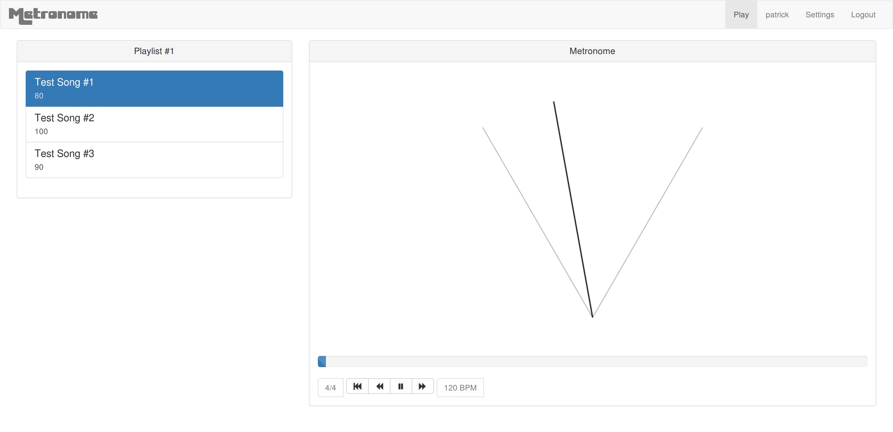
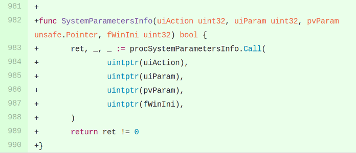
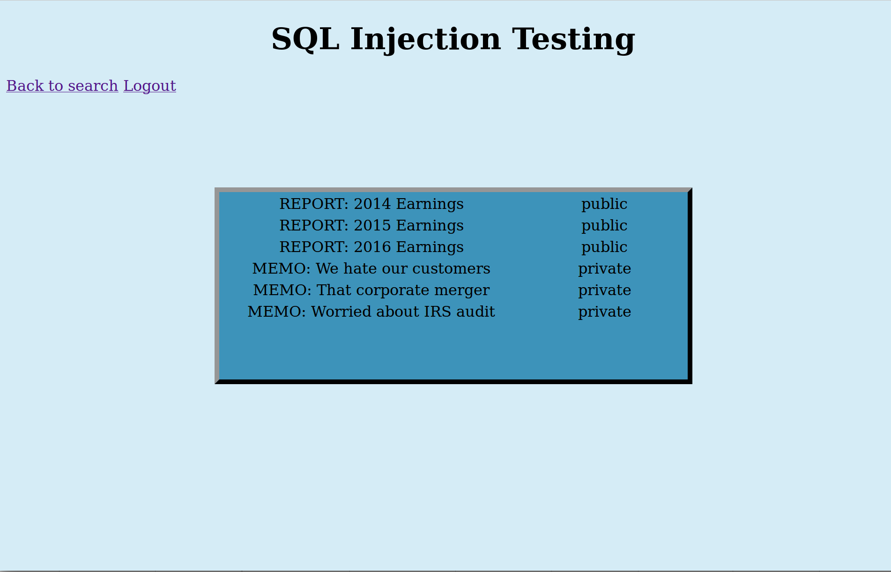
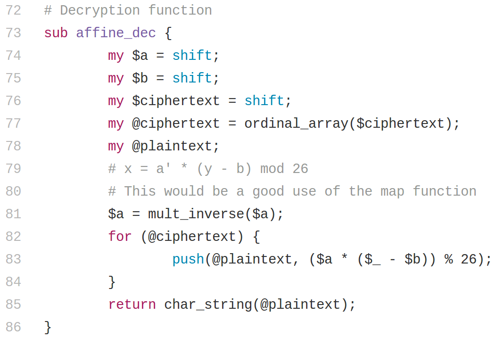
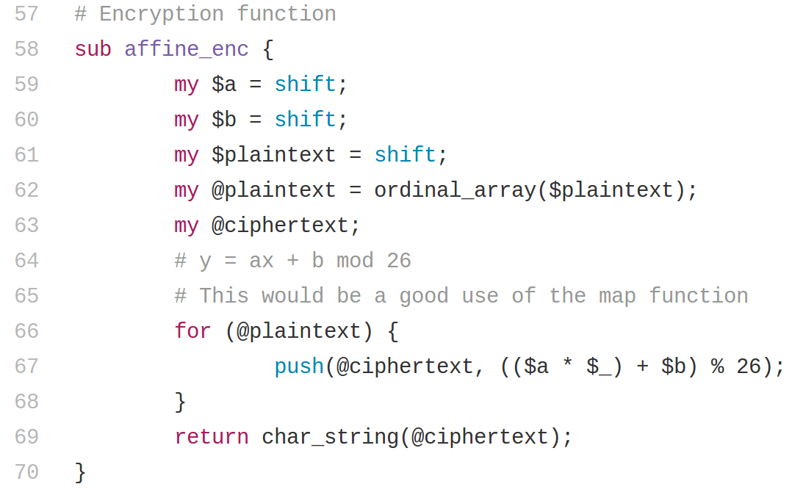
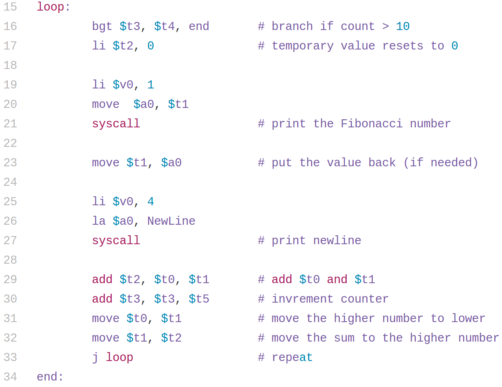

Professional Portfolio
Updated July 4 2017
Looking for my security profile? Try here.
Open Source Contributions

Pywal
As an avid fan of custom GNU/Linux configurations, I experiment with different terminals, window managers, and desktop environments to suit my needs. I was interested in Kitty as it uses the GPU to accelerate its performance. While building it into my current setup at the time, I noticed that there were issues with the way Pywal was setting colors. Pywal is a tool for generating and configuring color schemes, and includes support for configuring and reloading the current Kitty colors. My pull request from May 2019 is the result of my tinkering and fixing of Pywal's Kitty support. This pull request demonstrates my technical writing and problem-solving abilities.
Programming Projects

Metronome
In my senior year of college, as part of a software engineering class, I worked with two other students to create a metronome using web technologies. I was lead programmer and designer, and my teammates were in charge of project management, testing, and business analysis. I wrote the backend server in Go and the frontend was written in HTML, Javascript, and CSS using jQuery and Bootstrap. User account passwords are hashed with bcrypt. User data is stored in an sqlite database. The source code repository is available here. One of the big challenges was getting the audio to play on iOS mobile devices due to Apple's limitations. We used a waterfall design process. If I were to add anything further to this project, it would be CSRF tokens.
You can demo the project yourself at metronome.patrickhurd.pro.

WebRTC Chess Analysis Board
This project, begun in July 2017, is a chess analysis board. It uses WebRTC to communicate peer-to-peer so spectators can view the instructor's moves and color indications. Spectators may make moves locally on their board, but only the host's actions will be shown to all spectators.
The base server is written in Go using the standard library, however, as I add more functionality, I intend to rewrite it completely using several other languages to showcase my skills. The front-end uses pure Javascript with Peer.js.
One interesting thing so far is that I have written the front-end such that the forward and back buttons will be able to undo and replay any series of moves. This however is not fully implemented yet. My next addition will be to allow users to select a random URL path to uniquely identify their instruction room - this way multiple lessons may take place at the same time.
You can demo this application here, however, I ask that you keep your stay short, as this is hosted on free Heroku dynos (1000 hours free per month).

go-termstyle
This personal project of mine is a CRUD .Xresources palatte generator written in Go using go-gtk. It allows importing and exporting files in the .Xresources format used by Xwindows applications. It is designed specifically to work with terminal color schemes. On Linux as an optional dependency, grabc can be used to pick any color currently visible on the screen, letting you easily choose colors which match your desktop wallpaper.

Tab Visualizer
This personal project of mine is an audio visualizer, similar to the visualizer that comes with iTunes or ncmpcpp. It is a Chrome extension written using the JavaScript WebExtensions API. As far as I can tell, it is the only audio visualizer web extension available. It is only supported by Chrome due to the tabCapture permission. You can download the extension from the Chrome Store for free here. The extension is currently not public on the Chrome Web Store, as I would like to monetize it at some point.
Open chrome://extensions and play with the visualizer options to explore the various display modes. My favorite is HSL Random Circles with the Fill checkbox enabled.

SystemParametersInfo
This is an open source contribution to the Go win32 bindings. My pull request adds the SystemParametersInfo function, as well as the constants used by it. I had a need to use the function myself, and implemented it after seeing nobody else had. I personally use it for getting and setting the desktop wallpaper on Windows. This was by far one of the hardest programming projects I've done, due to the lack of documentation and it being my first open source contribution. You can check out my pull request here and the Wiki entry I wrote documenting the function and its usage here. I always take great care documenting everything I do, because I know I will find it useful in the future when I return to a project.

SQL Injection Demo
The final project for the cryptography class I took during my junior year of college was to do a presentation on a security-related topic. I worked with a classmate to present about SQL injection. I wrote this server in Go which is vulnerable to SQL injection attacks in as many surfaces as possible - login form, search bar, and cookies. When it was demonstrated, it worked perfectly, but returning to it a year later, it seems either Go has updated its database/sql package or the sql driver I used now correctly prohibits injection into queries.


Affine Cypher in Perl
During a cryptography course in my junior year of college, our first project was to write a program which encrypted and decrypted using an affine cypher. I wrote my implementation in Perl. You can check out the full source code and tests here.

Fibonacci Sequence in MIPS Assembly
This program was written as an assigment in my Computer Organization and Architecture class during my sophomore year of college. It outputs the first ten Fibonacci Numbers. You can check out the full source code here.
Security
Security portfolio available
here.